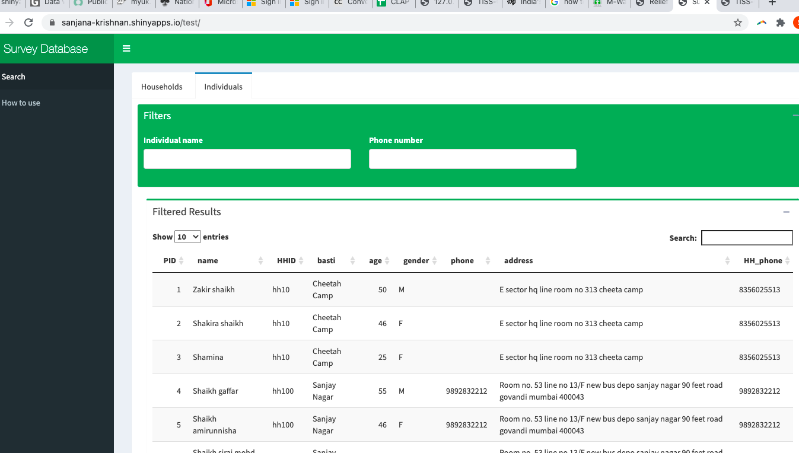

The outputs of the survey can be found in three key datasets and one search application.
| Dataset | Description | Download |
|---|---|---|
| Codebook | See sheet "codes". Divides questions into two groups (HH and ind) and 10 sub groups. It assigns a "question code" to the 194 questions in the column "code". | Download size: 440kb. 1717 rows, 7 columns |
| Individual dataset | Contains clened versions of individual level data and associated household data. Columns with "_c" rat the end efer to the cleaned versions of the column, which should be used for analysis. Each row has a unique person ID (PID) attached to it. | Download excel size 146.3 MB
Download csv size: 647 MB. 97414 rows, 363 columns |
| Household dataset | Contains cleaned version of household level data. Columns with "_c" rat the end efer to the cleaned versions of the column, which should be used for analysis. Each row has a unique person ID (hhid) attached to it. | Download csv size 61.6 MB
Download excel size: 23.6 MB. 25579 rows, 268 columns |
| occupation dataset | contains cleaned data related to the occupation, livelihood and income of individuals before and after the March 2020 lockdown. Occupations were further classified to occupation group (construction worker, begari, housework etc.), government/private/self-employed, essential services, and formal/informal. | Download csv size: 11.5MB. 97414 rows, 15 columns |
| search application | application to search for households and individuals covered in the survey based on their names and phone numbers. This was used by CRFs and CFs to aid the geolocation of households on maps. It was also used by CLAP volunteers as they collected relief requests from the community during the second lockdown. | open app |
The three datasets; household, individual and basti; each have a unique identifier/ID and are linked by identifyers (primary and secondary keys). Each individual is assigned a unique "person ID". Each household is assigned a unique "hhid" and each basti has a unique name. The entity relationship diagram shows the many-to-one relationship between indivduals, households and bastis; i.e. every individual is linked to one HH, and every HH is linked to one basti. Each basti has several households and each households has several individuals.
The survey had 194 questions and had two units of data collection: Households and individuals. Questions are on 10 sub groups (housig, health, water, sanitation etc.) 147 questions were asked to each HH and 47 questions to each individual. There survey was filled in using kobo toolbox. There were two versions of the survey form. The link to the forms and the output data:
| Survey version | Link to kobo form | Data collected | Version 1 | shubham to add | Download excel size 12.1 MB; 6580 rows, 1586 columns |
|---|---|---|
| Version 2 | shubham to add | Download excel size 34.9 MB; 18999 rows, 1684 columns |
shubham to add
The data collected in the survey required extensive cleaning. Almost every column had to be manually cleaned. This was done by volunteers in the first level, after which secondary and tertiary cleaning was done.
A simple search application was created to search for households and individuals covered in the survey based on their names and phone numbers. This was used by CRFs and CFs to aid the geolocation of households on maps. It was also used by CLAP volunteers as they collected relief requests from the community during the second lockdown.
